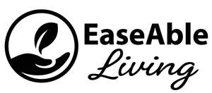

Trade Mark Journal No.2025/047 21 November 2025
UK00004293635 12 November 2025 (10,20,21,35)

- Class 10
- Assistive devices adapted for the disabled; Cushioning devices for medical use; Silicone orthopedic devices.
- Class 20
- Bathroom fittings in the nature of furniture; Furniture fittings, not of metal; Fittings, not of metal (Furniture -); Domestic furniture made of wood; Furniture for industrial use; Furniture; Furniture and furnishings; Household furniture; Bathroom furniture; Furniture of plastic materials; Kitchen furniture.
- Class 21
- Cooking utensils, non-electric; Containers for household or kitchen use; Autoclaves (Non-electric -) for household use; Graters [non-electric household utensils]; Household utensils for cleaning, brushes and brush-making materials; Non-electric food blenders [for household purposes]; Non-electric food mixers [for household purposes]; Beaters (Non-electric -) for kitchen use; Whisks, non-electric, for household purposes; Household or kitchen utensils; Mixing machines, non-electric, for household purposes; Household gloves for cleaning purposes; Abrasive sponges for kitchen [cleaning] use; Heat-insulated containers for household use; Blenders, non-electric, for household purposes; Non-electric egg crackers for household use; Non-electric griddles [cooking utensils]; Griddles [non-electric cooking utensils]; Colanders for household use; Cooking pots [non-electric]; Portable cooking kits for outdoor use; Household or kitchen containers; Abrasive instruments for kitchen [cleaning] purposes; Polishing apparatus and machines, for household purposes, non-electric; Cooking pots, non-electric / Non-electric cooking pots; Hand-operated batter dispensers for household use; Brushes for household use; Jars for household use; Egg separators, non-electric, for household purposes; Graters for household use; Household utensils; Strainers for household use; Appliances for removing make-up, non-electric; Non-electric make-up removing appliances; Kitchen mixers, non-electric; Wax-polishing appliances, non-electric, for shoes; Fruit presses, non-electric, for household purposes; Napkin dispensers for household use; Kitchen grinders, non-electric; Containers for household use; Graters for kitchen use; Caddies for holding hair accessories for household and domestic use; Pressure cooking saucepans, non-electric; Non-electric pressure cooking saucepans; Non-electric pasta makers for domestic use; Rubber gloves for household use; Compost containers for household use; Utensils for household purposes; Graters [household utensils]; Crushers for kitchen use, non-electric; Sifters [household utensils]; Trash containers for household use; Laundry balls for use as household utensils.
- Class 35
- Retail services connected with the sale of furniture; Online retail services relating to cosmetics; Online retail services relating to toys; Online retail services relating to handbags; Retail services connected with stationery; Online retail services relating to luggage; Retail services in relation to gardening products; Online retail store services in relation to clothing; Retail services relating to home textiles; Retail services in relation to wearable computers; Retail services in relation to bakery products; Retail services relating to clothing; Unmanned retail store services relating to food; Retail services in relation to hair products; Retail service connected with the sale of power tools via a distributorship; Retail services in relation to furniture; Retail services in relation to furnishings.
Square 8 Ltd